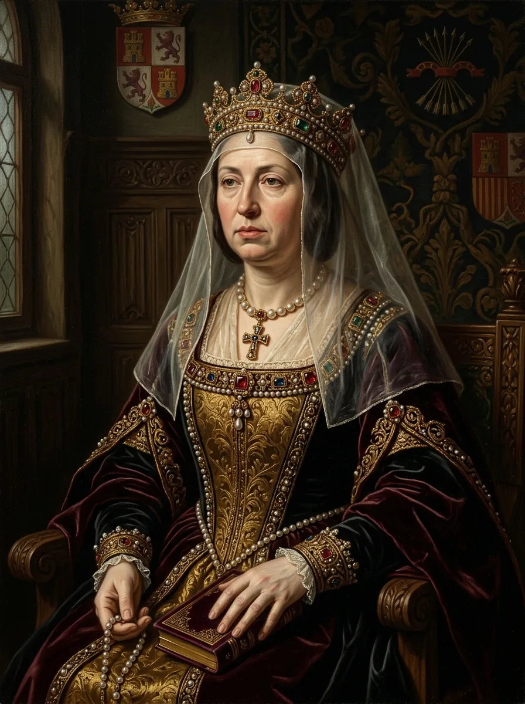

Isabella I of Castile
Isabel I de Castilla
Queen of Castile in her own right; unifier of Spain, patron of Columbus, and architect of the centralized early modern Spanish empire.
«The royal crown is a burden borne only by perseverance and unyielding resolve.»
Reflects contemporary chronicler notes on her political gravity.
۰۱
What She Did (The Record)
1469 AD
Autonomously marries Ferdinand of Aragon, fiercely maintaining Castile's independent royal prerogatives.
1492 AD
Conquest of Granada, issuance of Alhambra Decree, and sponsorship of Christopher Columbus.
۰۲
What She Was Called (Labels & Lineage)
Cruel Religious Fanatic
✎ Alternative Reading & Critique
Isabella's reign blended iron-willed administrative discipline with ruthless Renaissance statecraft.
۰۳
Personality Reading (Non-Diagnostic)
Methodological Note: This is not a clinical diagnosis. Retrospective diagnosis without clinical interview is epistemologically impossible. What follows is a non-pathologizing synthesis of documented history.
Isabella operated as an autonomous sovereign in a patriarchal era, establishing public law and fiscal administration while unleashing severe institutional religious repression.
۰۴
Primary & Secondary Sources
- [Secondary Source] Tremlett, Giles. Isabella of Castile: Europe's First Great Queen. Bloomsbury, 2017.
- [Secondary Source] Kamen, Henry. Spain, 1469–1714: A Society of Conflict. Routledge, 2005.